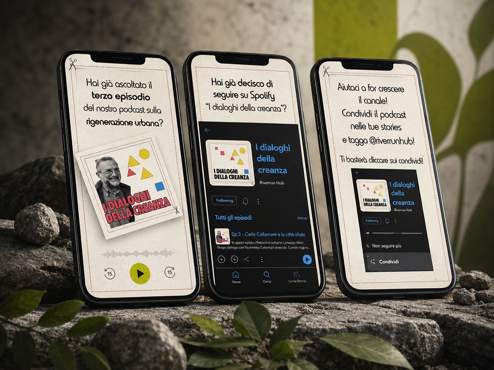
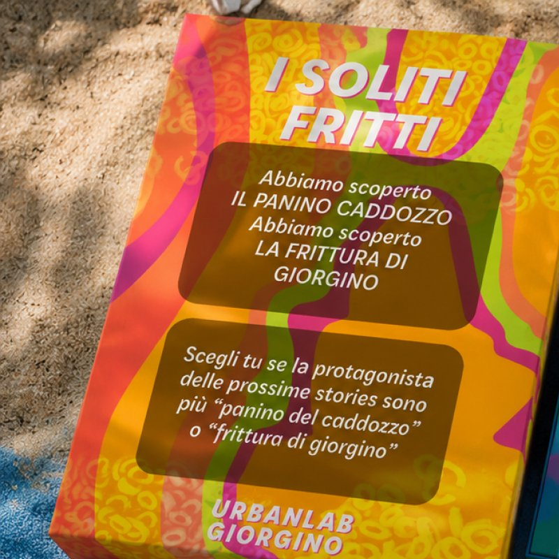

Riverrun
Social media management e content creation

Tradurre un approccio territoriale in linguaggio social.
Riverrun è un'associazione attiva nell'organizzazione di attività culturali e nella valorizzazione della memoria storica, lavorando a stretto contatto con persone e quartieri. Il compito non era promuovere eventi — era trovare un linguaggio capace di restituire la complessità del loro approccio: comunitario, partecipativo, radicato nel territorio.
Dal calendario editoriale alla pubblicazione, passando per la creazione dei contenuti.
"Il collage, il gioco, la carta stampata portata sui social. Ogni progetto con la sua estetica — perché ogni comunità ha la sua voce."







Giorgino — scoprire senza invadere
Giorgino è un piccolo villaggio di pescatori, quartiere di Cagliari emarginato dalle istituzioni. Il progetto ha costruito un sistema di turismo-gamification che non stimola un'invasione del posto — incentiva una scoperta quasi solitaria di quelle strade, dei segreti che nascondono, delle voci che il vicinato custodisce gelosamente.
QR code posizionati nel quartiere permettono di ascoltare la voce di chi quel posto l'ha visto nascere e crescere: memoria orale come infrastruttura culturale. Intorno, le feste di quartiere — cibo, musica, scambio solidale — raccontate attraverso rubriche che usano quiz e dinamiche di gioco per avvicinare senza semplificare. Stories e commenti come spazi davvero interattivi, non decorativi.